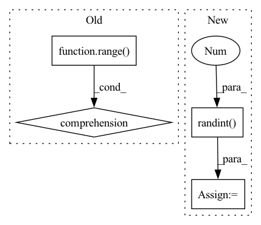

Pattern ID :12809
Before Change
print("n, dtype, ntensor, gflop, runtime, tflop/s")
for n in [16, 32, 64, 128, 256, 512, 1024, 2048, 4096]:
nt_a = torch.nested_tensor(
[torch.randn(n, n).to(dtype).cuda() for t in range( ntensor) ]
)
nt_b = torch.nested_tensor(
[torch.randn(n, n).to(dtype).cuda() for t in range(ntensor)]After Change
def sweep_n(niter, dtype):
for ntensor in [4, 8, 16, 32, 64, 128, 256]:
tensors = [torch.randn(256, random.randint( 100, 200 ) ) for t in range(ntensor)]
nt_a = torch.nested.nested_tensor(
tensors,
dtype=dtype,
device="cuda",
)
nt_b = torch.nested.nested_tensor(
[t.t() for t in tensors],
dtype=dtype,
device="cuda",In pattern: SUPERPATTERN
Frequency: 3
Non-data size: 4
Instances Fragment ID: 43389046
Project Name: pytorch/pytorch
Commit Name: 943b20e7ae290d8e71f877eb700f197a9df56cbe
Time: 2022-11-02
Author: cpuhrsch@fb.com
File Name: benchmarks/nested/nested_bmm_bench.py
M Class Name: AnonimousClass
N Class Name: AnonimousClass
M Method Name: sweep_n(2)
N Method Name: sweep_n(3)
M Parent Class:
N Parent Class:
M File Name: benchmarks/nested/nested_bmm_bench.py
N File Name: benchmarks/nested/nested_bmm_bench.py
M Start Line: 22
M End Line: 33
N Start Line: 24
N End Line: 40
Before Change
np.random.seed(1234)
torch.manual_seed(4321)
n_atoms_per_batch = np.random.randint(2, 10, size=n_batches)
batch = torch.tensor([i for i in range(n_batches) for j in range( n_atoms_per_batch[i]) ], device=device, dtype=torch.int)
cumsum = np.cumsum( np.concatenate([[0], n_atoms_per_batch]))
lbox=10.0
pos = torch.rand(cumsum[-1], 3, device=device)*lboxAfter Change
if device == "cuda" and not torch.cuda.is_available():
pytest.skip("CUDA not available")
torch.manual_seed(4321)
n_atoms_per_batch = torch.randint( 3, 100 , size=(n_batches,))
batch = torch.repeat_interleave(torch.arange(n_batches, dtype=torch.int32), n_atoms_per_batch).to(device)
cumsum = np.cumsum( np.concatenate([[0], n_atoms_per_batch]))
lbox=10.0
pos = torch.rand(cumsum[-1], 3, device=device)*lbox Fragment ID: 43389040
Project Name: torchmd/torchmd-net
Commit Name: 2589479c2f919bb0b36fcfbfb1187b4f7b11e3d6
Time: 2023-05-03
Author: raulppelaez@gmail.com
File Name: tests/test_neighbors.py
M Class Name: AnonimousClass
N Class Name: AnonimousClass
M Method Name: test_neighbors(4)
N Method Name: test_neighbors(4)
M Parent Class:
N Parent Class:
M File Name: tests/test_neighbors.py
N File Name: tests/test_neighbors.py
M Start Line: 18
M End Line: 29
N Start Line: 19
N End Line: 28
Before Change
torch.manual_seed(111)
batch_size, C, T = 4, 3, 1024
P = permutations(range( C) )
target = torch.randn(batch_size, C, T, dtype=torch.float)
pattern = random.choices([list(p) for p in P], k=batch_size)
pattern = torch.Tensor(pattern).long()
print("Ground truth pattern: ")
print(pattern)After Change
batch_size, C, T = 4, 3, 1024
input = torch.randint(2, (batch_size, C, T), dtype=torch.float)
target = torch.randint(2 , (batch_size, C, T), dtype=torch.float)
print("-"*10, "Negative SI-SDR (PIT)", "-"*10)
criterion = NegSISDR()
pit_criterion = PIT(criterion, n_sources=C)
loss, pattern = pit_criterion(input, target)
print(loss)
print(pattern) Fragment ID: 43389055
Project Name: tky823/dnn-based_source_separation
Commit Name: a2c8fff0b948824663d007770528fa8eaecabcf6
Time: 2021-06-12
Author: 40362510+tky823@users.noreply.github.com
File Name: src/criterion/pit.py
M Class Name: AnonimousClass
N Class Name: AnonimousClass
M Method Name: _test_sink_pit(0)
N Method Name: _test_sink_pit(0)
M Parent Class:
N Parent Class:
M File Name: src/criterion/pit.py
N File Name: src/criterion/pit.py
M Start Line: 327
M End Line: 340
N Start Line: 327
N End Line: 337